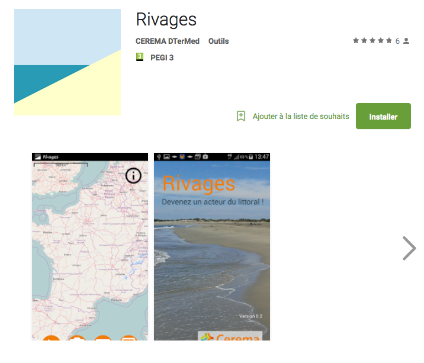
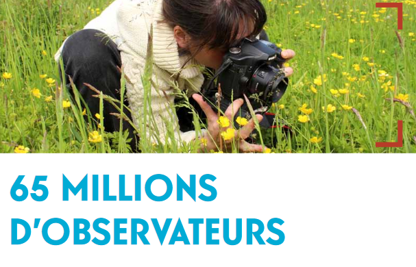
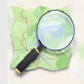

Ce site est une preuve de concept. Un projet de plateforme pour co-construire ensemble de la connaissance, des politiques publiques et des biens communs développé dans le cadre d'une expérimentation d'innovation publique. L'équipe la Ruche est composée de:

Trashadvisor
De quelles couleurs sont vos poubelles ? Construisons ensemble la carte des règles de tri en france



Observatoire citoyen des risques naturels
Projet du BRGM, de l'UTTT, avec le soutien de la MAIF